4.1. Update Overview¶
Code Composer Studio is based on the Eclipse application framework and uses the Eclipse update manager for updates. This allows you to check for new versions of Code Composer Studio, compiler releases, new device support as well as updates to other Eclipse plug-in packages that you have installed.
When checking for updates Code Composer Studio will query a set of update sites. Features and components typically have their own update site.
4.2. Update Availability¶
A new version of Code Composer Studio is released each quarter (4 releases a year). Not all of the releases are available as updates. If the first digit of the version has changed, such as 8.0, 9.0, 10.0… then that is a major release and is not available as an update. If only the second part of the version number changed then the release is available as an update.
For example you can update from 8.0 to any 8.x release but not to a 9.x release.
4.3. Update Process¶
4.3.1. Automatic¶
By default Code Composer Studio automatically checks for updates when the application is launched. If there are updates available a notification will appear at the bottom right corner of the screen.
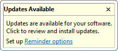
The updates settings can be changed via the Preferences dialog. Open this dialog by going to Windows → Preferences on the menu. Type “update” in the filter box to quickly find the update settings. Select Automatic Updates in the tree on the left to access the automatic updates settings. Here you can disable the automatic update check, adjust when it runs, change the download settings and control the update reminder notification.
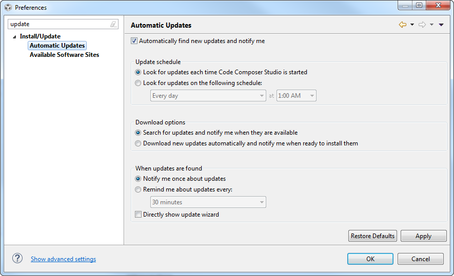
4.3.2. Manually Checking for Updates¶
You can also manually initiate an update check. This is useful if you have disabled the automatic update check or have not restarted Code Composer Studio in a long time.
To initiate an update check go to Help → Check for Updates on the menu. This will parse all the pre-configured update sites and display a list of available updates.
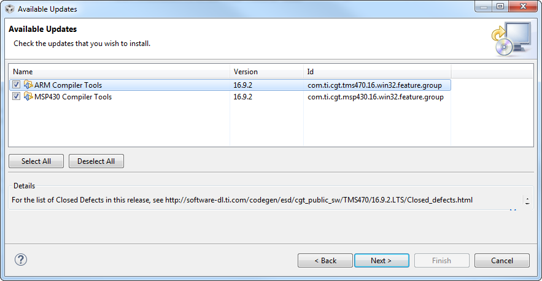
Select the updates that you want to install and click the Next button to continue. This will take you through the update process. For many updates the actual installation of the update will occur when the update manager prompts you to restart Code Composer Studio.
It is also possible to restrict the update check to a specific update site. This method is described in the Installing New Software section below. This method can be useful if you have a slow internet connection or if you are interested in updating a specific component.
4.4. Installing New Software¶
The Install New Software feature is used when a new feature or component needs to be installed. Installing an plug-in to integrate a specific source control tool would be considered a new feature. However some releases of existing features are also considered new features. For example, if you have version 16.9.0 of the compiler installed you would see 16.9.x releases as updates. However a 16.12.x or 17.x.x release of the compiler would be considered a new feature.
If you need to install support for a new device family that was not selected during initial Code Composer Studio installation then you will need to use a different process which is described in the Changing the Code Composer Studio Installation section.
To install a new feature simply go to Help → Install New Software on the menu. A screen like the one below will be shown.
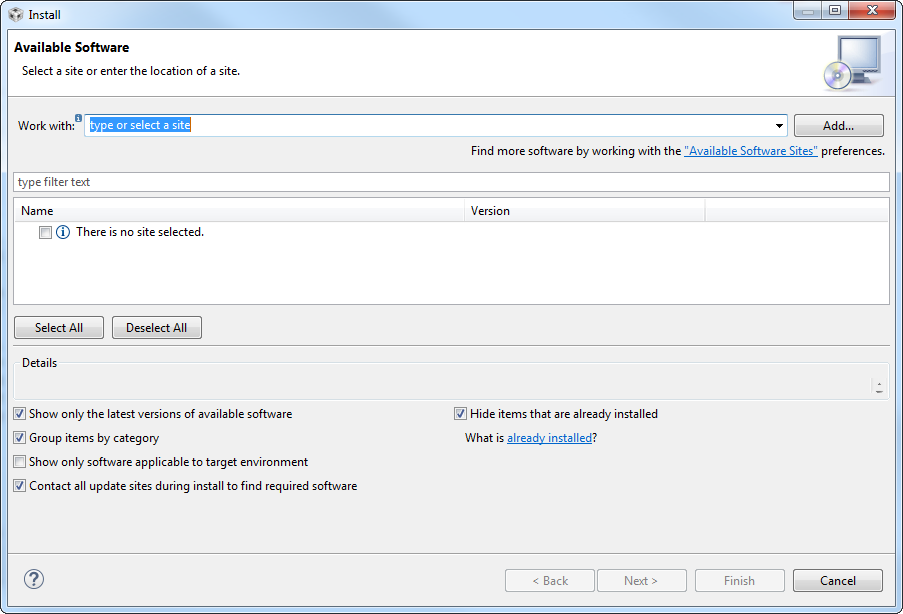
This screen has several fields and options. The Work with: field is used to configure which update site will be checked for updates and new features. You can select a site via the drop-down selection or manually enter the location of a site. The list of sites displayed in the drop down is configured in the Preferences dialog. The Managing Update Sites section describes how to manage the update sites.
Once an update site is selected Code Composer Studio will query the site and then display the features and updates available on the site. Here the Code Generation Tools (compilers) update site has been selected and all of the compiler releases and updates available are displayed.
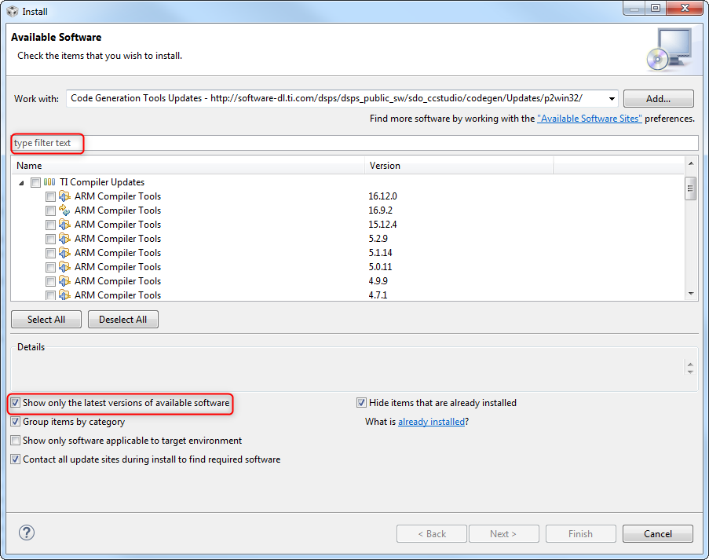
You can use the filter box above the list to search for a specific item. This can be very useful if the list is long.
4.4.1. Showing all versions¶
By default only the latest version of a feature will be shown. For example in the list above you see the 16.9.2 release of the ARM Compiler. If you uncheck the box labelled Show only the latest versions of available software then you also see the 16.9.0 and 16.9.1 releases.
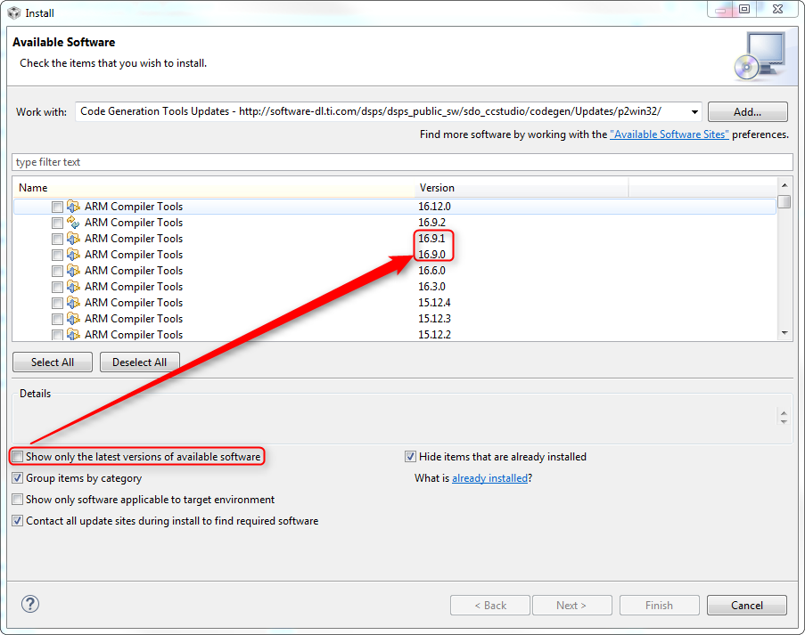
4.4.2. Display items that are installed¶
If you uncheck the box Hide items that are already installed then you will also see the versions of features that you have installed. The icons for these items will be grey to reflect that they are already installed. Unchecking this box can be useful if you want to see the version you have and be able to quickly tell what the latest update for that version is.
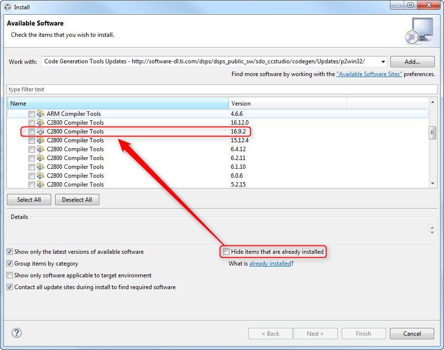
4.4.3. Target environment¶
The Show only software applicable to the target environment controls which host environment packages of an item are shown. For example an update may have different packages for Windows, Linux or MacOS. Unchecking the box will show all packages that are on the update site. For some features there are separate update sites for each host environment. In that case the checkbox will have no impact.
4.4.4. Icons¶
4.5. Proxy Configuration¶
If your computer resides behind a firewall you may have to configure the proxy settings so that Code Composer Studio can access update sites. By default Code Composer Studio attempts to use the proxy configuration set by the operating system. However in some cases the proxy settings need to be set manually.
To configure the proxy settings go to Windows → Preferences on the menu. Type Proxy in the filter box and then select Network Connections in the tree on the left.
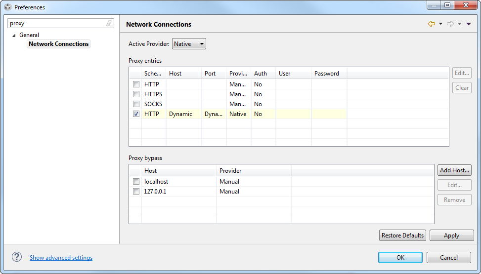
There are 3 options for the Active Provider.
- Native Uses the proxy configurations set by the operating system.
- Direct Bypasses any proxy configurations set by the operating system and connects directly to the internet.
- Manual Bypasses any proxy configurations set by the operating system and uses the settings at the bottom of this dialog.
4.5.1. Manual Configuration¶
In the box Proxy entries fill in the proxy settings of your network. You may need to contact your system administrator to gather that information. In the box Proxy bypass fill in the hosts that do not need a proxy to be accessed. Basically any host on the company’s intranet.
In rare cases the settings above may not be working correctly. In this case, you can edit the file ccstudio.ini at /ccsv[x]/eclipse (/ccsv[x]/eclipse/Eclipse.app/Contents/Eclipse for MacOS) and add the following entries immediately after the first line:
-Dhttp.proxyHost=192.168.1.1 -Dhttp.proxyPort=8080 -Dhttp.proxyUser=mydomain\myusername -Dhttp.proxyPassword=mypassword -Dhttp.nonProxyHosts=localhost|127.0.0.1
- Replace 192.168.1.1 with the correct IP address of your proxy server
- Replace 8080 with the correct TCP port of your proxy server
- (optional) Replace mydomain/myusername with the correct proxy credentials
- (optional) Replace mypassword with the proxy server password
- (optional) In the entry Dhttp.nonProxyHosts, you can add as many entries or domains as you need, provided they are separated by the OR operand (the vertical bar |)
4.6. Managing Update Sites¶
You can manage the update sites that are searched during an update check. This allows you to both add sites of your choosing, as well as remove repositories that have become unavailable or are simply not necessary.
To have access to the update site manager go to menu Windows → Preferences → Install/Update → Available Software Sites.
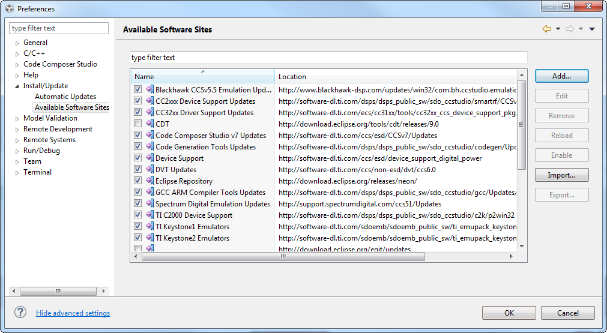
4.6.1. Adding a site¶
Click the Add button.
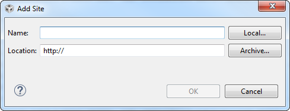
Depending on the type of update site the actions to perform vary.
- Server on the internet: provide both a name for the site and the url of the site. This is the most common way to add new repositories provided either by TI or by other third parties.
- Local repository: provide a name for the site. Click the Local button and browse to the directory where the local repository is placed. To be properly recognized as a repository, this directory usually has subdirectories named binary, features and plugins.
- Patch: click on Archive and browse to the .zip or .jar file downloaded from the internet. Similarly as above, to be properly recognized as a patch, the .zip or .jar file usually has subdirectories named binary, features and plugins.
4.6.2. Other actions¶
- Edit allows editing an existing update site. The procedure is identical as adding an update site.
- Remove removes the update site from the list. Cannot be undone.
- Reload reloads the information from the update site. For remote sites (servers on the internet), an internet connection is required.
- Enable/Disable toggles if the update site is used.
- Import imports a list of update sites in XML format. Useful in some instances where Code Composer Studio loses its update site information.
- Export exports the current set of update sites to an XML file.
4.7. Changing the Code Composer Studio Installation¶
Some actions are not available through the update manager. For example if you need to add support for a new processor family that was not previously installed, or add support for a different debug probe, you will have to run the Code Composer Studio installer to perform this action. This does not mean that you have to completely re-install Code Composer Studio.
Run the installation program. You can download it again if needed. Choose the installation location that matches where your current Code Composer Studio installation is located. Select the Product families or debug probes for which you wish to add support. Click through the rest of the screens. This will update your installation to match the new selections.
4.8. Removing Features¶
Certain components can be uninstalled from within Code Composer Studio.
Important: Certain core components such as DVT, Debug Server, Eclipse and CDT are critical for the operation of Code Composer Studio and will render it unusable if uninstalled. In other words, be careful when uninstalling features and components.
To uninstall a component, go to Help → About Code Composer Studio on the menu and click on the Installation details button. The screen below will be shown.
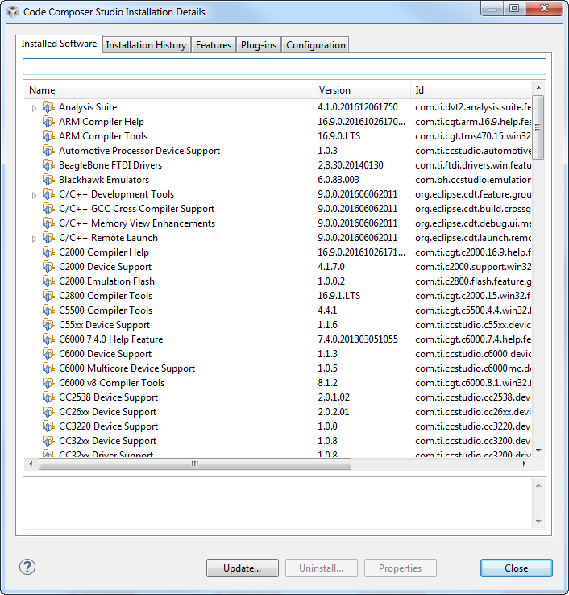
Click on the item that you wish to remove and click the Uninstall button.